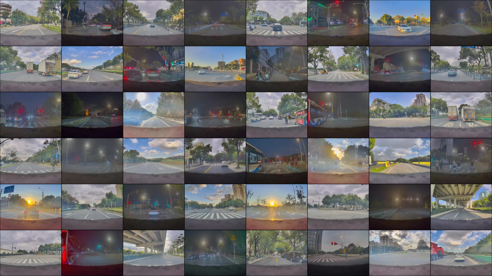

Recipes for Training and Deploying World-Action Models in the Real World
- 1Horizon Robotics
- 2Nanjing University of Posts and Telecommunications
- 3Nankai University
- 4The Hong Kong University of Science and Technology
- 5Shanghai Innovation Institute
- 6Institut Polytechnique de Paris
- 7National University of Singapore
- 8Nanjing University
- 9Hunan University
- 10Anyverse
- 11LogicOrigin
* Core contributor† Co-first author‡ Project leader
 Horizon Robotics
Horizon Robotics
PaperHugging Face
